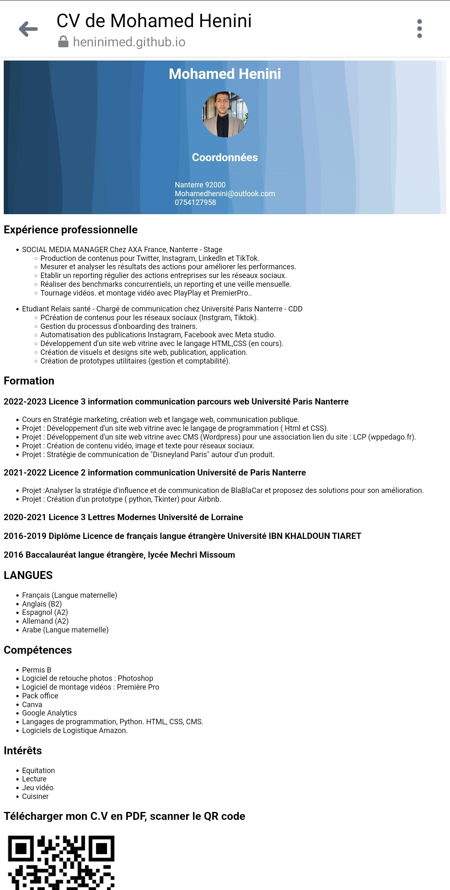
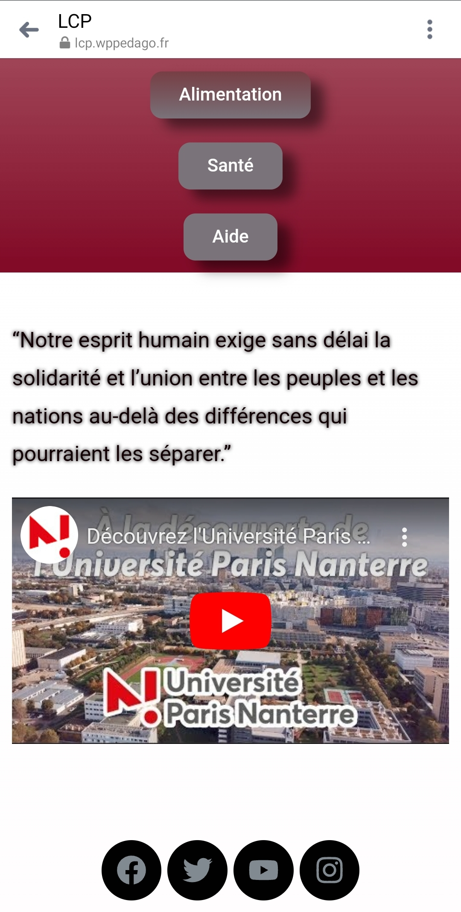
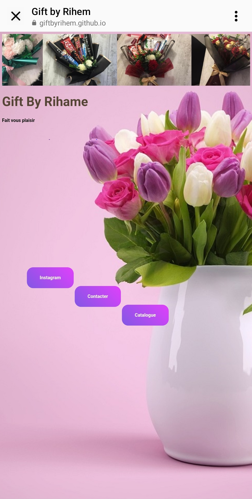

Pour ma recherche d'alternance et ma candidature en Master, j'ai créé un CV sous forme de site vitrine en utilisant HTML et CSS. J'ai ajouté un QR code pour télécharger le CV en PDF. Cette approche m'a permis de partager facilement mon CV avec des recruteurs potentiels.
Dans le cadre de mes études, j'ai eu l'opportunité de concevoir un site web avec WordPress pour une association qui s'engage dans la lutte contre la précarité étudiante. L'objectif principal de ce site était de faciliter l'accès des étudiants à des informations importantes. En respectant un cahier des charges.
J'ai conçu un site pour une cliente qui vend des bouquets de fleurs personnalisés. Son objectif était d'avoir un site simple. Le site a été développé avec ces exigences en tête, permettant aux clients d'accéder facilement aux coordonnées de la cliente.( HTML et CSS).
